INFORMACIÓN DE PAISES CENTROAMERICANOS
Símbolos Patrios de Belice
Bandera de Belice
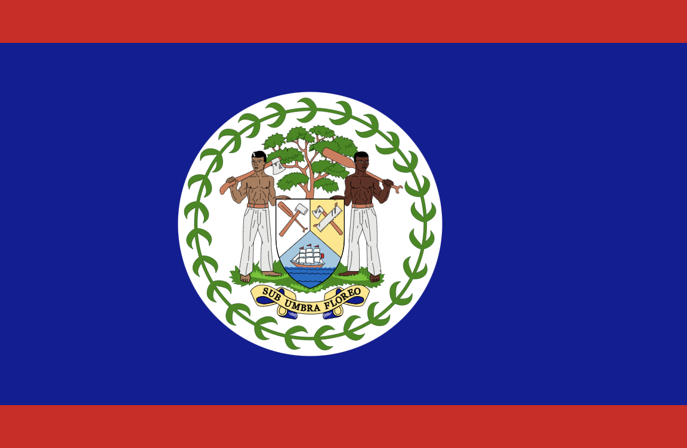
La bandera de Costa Rica consta de cinco franjas horizontales: azul en la parte superior e inferior, seguido de blanco y luego una franja roja en el centro.
Escudo de Armas de Belice
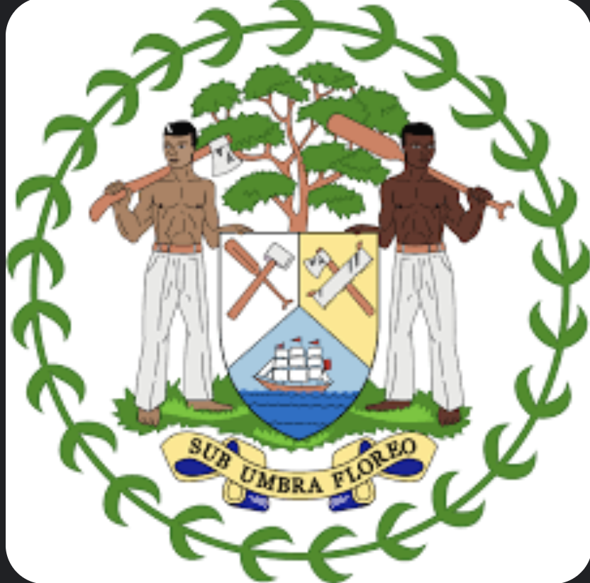
El escudo de armas muestra varios elementos significativos de Belice. Incluye un lema en latín que se traduce como "Sub umbra floreo" (Florezco en la sombra),
que refleja el compromiso del país con el progreso y la esperanza a pesar de los desafíos. El escudo también presenta una figura maya sosteniendo un escudo con
la fecha de la independencia de Belice, una caña de azúcar que simboliza la agricultura, un árbol de caoba que representa la riqueza forestal del país, dos
trabajadores de diferentes razas y una manta azul con el lema del país.
Flor Nacional
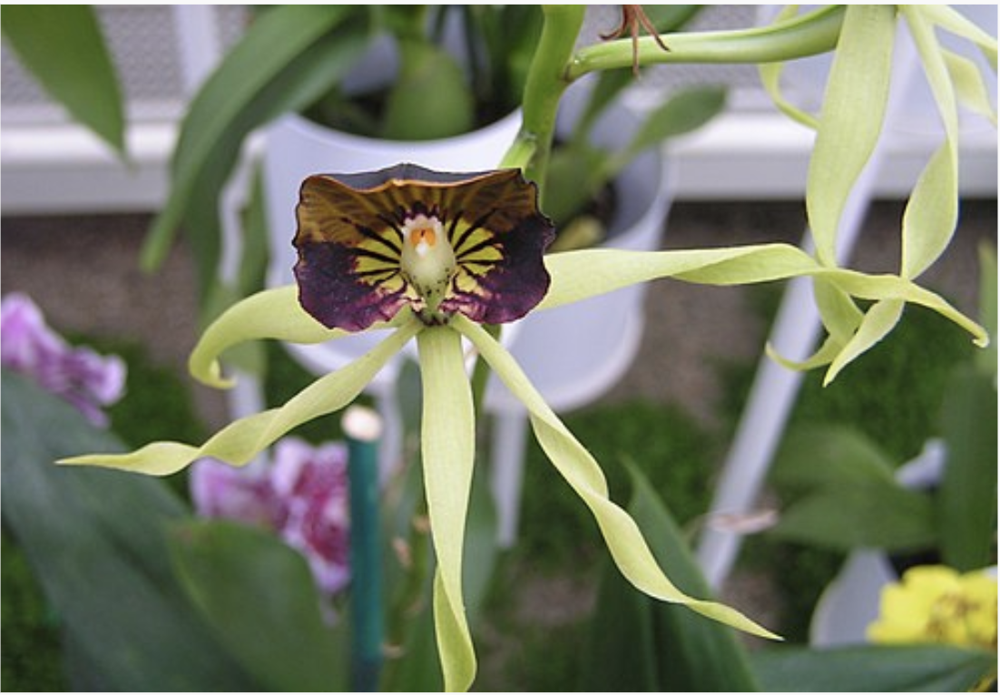
La Brassavola Acaulis, conocida como la orquídea negra, es la flor nacional de Belice. Esta orquídea se encuentra comúnmente en todo el país y es apreciada por
su belleza única.
Ave Nacional
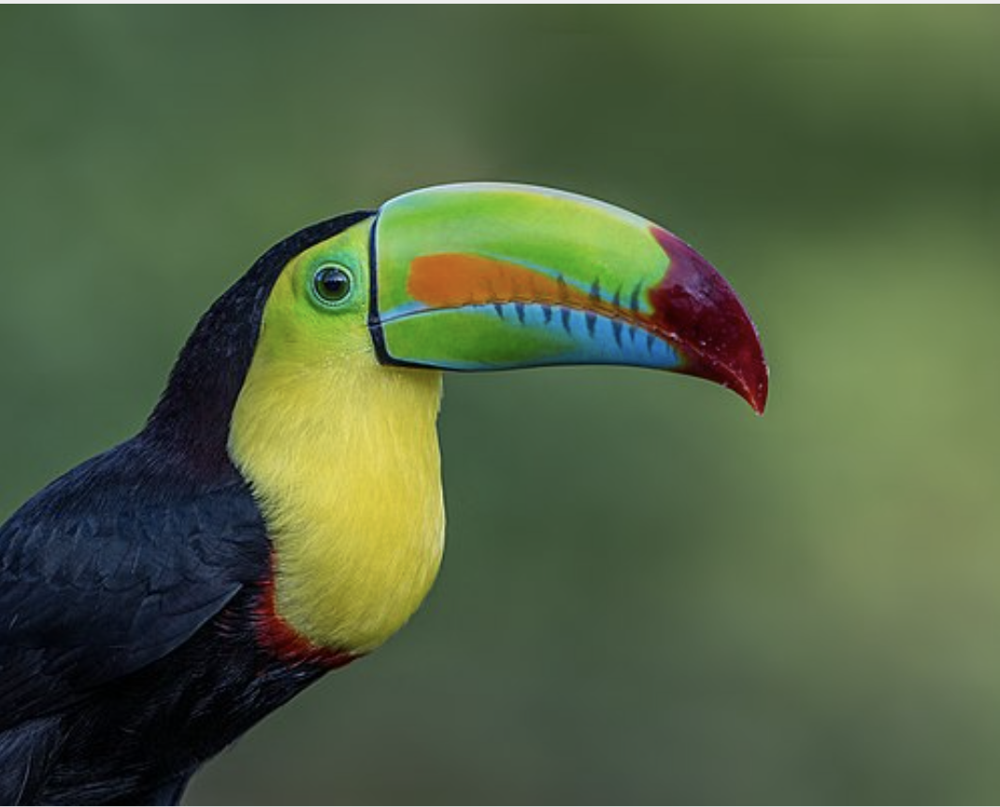
El Tucán Toco (Ramphastos Toco), con su colorido pico y plumaje, es el ave nacional de Belice y se encuentra tanto en las selvas como en las zonas urbanas del país.
Breve Historia de Belice
Belice es un país ubicado en América Central, conocido por su rica historia y diversidad cultural. Originalmente habitado por diversas comunidades indígenas,
como los mayas, el territorio de Belice fue explorado por los europeos durante la época colonial. Fue parte del imperio español hasta que, en el siglo XVII,
los británicos comenzaron a establecer asentamientos en la región.
Durante gran parte de su historia, Belice fue un centro de actividad pirata debido a su ubicación estratégica en el Mar Caribe.
Más tarde, en el siglo XIX, la colonia británica se convirtió en un importante centro de producción de caucho y madera. Durante
este tiempo, la población se volvió muy diversa, con influencias de africanos esclavizados, europeos, asiáticos y pueblos
indígenas.
La lucha por la independencia comenzó en la década de 1950, y finalmente, en 1981, Belice se convirtió en una nación independiente. Sin embargo, hubo
disputas territoriales con Guatemala, que reclamaba gran parte del territorio beliceño. Esta disputa se resolvió en 1991 con un acuerdo que permitía a
Belice mantener su independencia.
Hoy en día, Belice es conocido por su belleza natural, incluyendo selvas tropicales, arrecifes de coral y ruinas mayas. El turismo es una parte importante de
su economía, atrayendo a visitantes interesados en la biodiversidad y la rica herencia cultural del país. La historia de Belice es una mezcla fascinante de
influencias culturales y luchas por la independencia, lo que ha contribuido a su identidad única en la región.
Extensión Territorial
Belice ocupa una superficie territorial de: 22,966 km².
División Política de Belice
La división política de Belice está organizada en distritos, que son las principales divisiones administrativas del país. Cada distrito tiene su propia capital y está
subdividido en áreas de gobierno local o aldeas. Belice está dividido en seis distritos así:
- Distrito de Belice (Belize District)
- Distrito de Cayo (Cayo District)
- Distrito de Corozal (Corozal District)
- Distrito de Orange Walk (Orange Walk District)
- Distrito de Stann Creek (Stann Creek District)
- Distrito de Toledo (Toledo District)
Lugares Turísticos Importantes
- Cayo Ambergis: Esta isla, situada en el norte de Belice y cerca de la barrera de coral, es un destino favorito para los amantes del buceo y el snorkel. El
famoso Gran Agujero Azul, una maravilla submarina, se encuentra cerca de esta isla. Además de las actividades acuáticas, Cayo Ambergris ofrece playas de arena
blanca, resorts y una atmósfera relajada.
- Ruinas Mayas de Xunantunich y Caraco: Belice tiene varias ruinas mayas impresionantes, pero Xunantunich y Caracol son dos de las más destacadas. Xunantunich
es conocida por su pirámide El Castillo, que ofrece impresionantes vistas panorámicas desde la cima. Caracol es uno de los sitios mayas más grandes de Belice
y cuenta con la pirámide Caana, una de las estructuras más altas de Belice.
- Reserva de la Selva de Belice (Belize Rainforest Reserve): Esta vasta área de selva tropical es el hogar de una increíble biodiversidad. Los visitantes pueden
explorar la selva a través de senderos, hacer tubing en ríos subterráneos, practicar tirolesa y observar la vida silvestre en su hábitat natural. También es
posible visitar cuevas sagradas mayas, como Actun Tunichil Muknal.
- Caye Caulker: Esta isla relajada en la barrera de coral de Belice es un paraíso para los amantes de la playa y el buceo. Los visitantes pueden disfrutar de
aguas cristalinas, arrecifes de coral vibrantes, deportes acuáticos y una atmósfera tranquila y relajada. Además, Caye Caulker es conocida por su famoso lema
"¡Vaya despacio!" que refleja su estilo de vida relajado.
Símbolos Patrios de Guatemala
Bandera de Guatemala
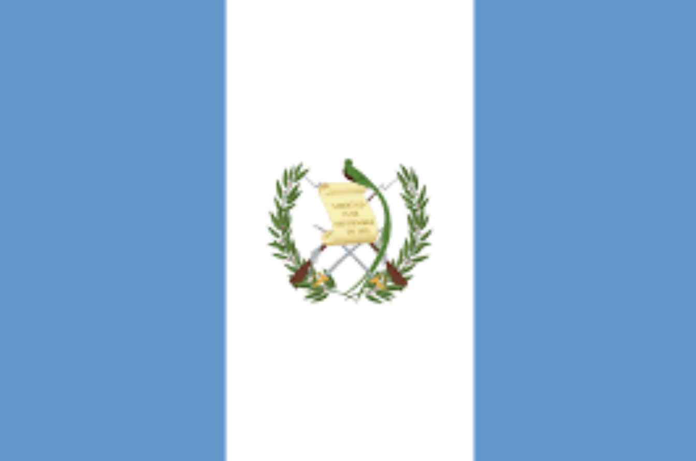
La bandera de Guatemala consta de tres franjas verticales de igual tamaño. El color azul representa el Océano Pacífico y el Océano Atlántico que bañan las costas del
país, mientras que el color blanco simboliza la pureza y la paz. En el centro de la franja blanca se encuentra el escudo de armas de Guatemala.
Escudo de Guatemala
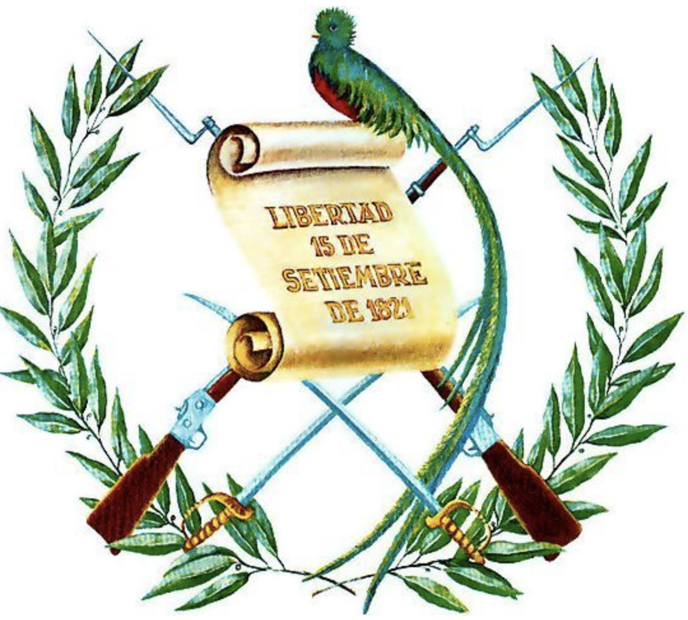
El escudo de armas guatemalteco es un emblema heráldico que contiene varios elementos simbólicos. En el escudo se representa un quetzal, el ave nacional de Guatemala,
en actitud de descanso sobre un pergamino que lleva la inscripción del año 1821, en referencia al año de la independencia. También se encuentran dos rifles de época,
representando la lucha por la independencia, y laureles que simbolizan la victoria.
Flor Nacional
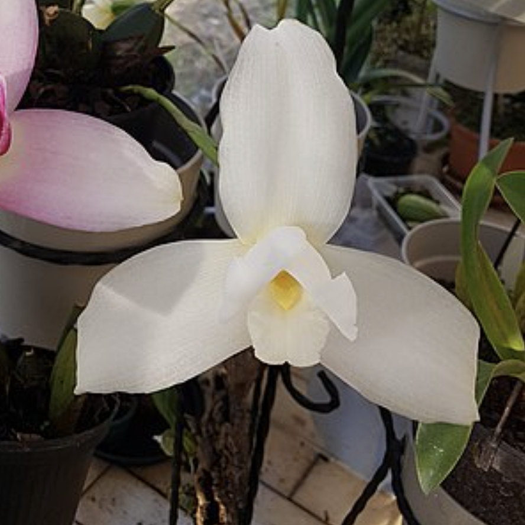
La Flor de la Monja (Monja Blanca o Lycaste Skinneri) es la flor nacional de Guatemala. Es una especie de orquídea que se encuentra en los bosques húmedos de montaña
del país. Su nombre se deriva de la semejanza de la flor con el hábito de una monja.
Ave Nacional
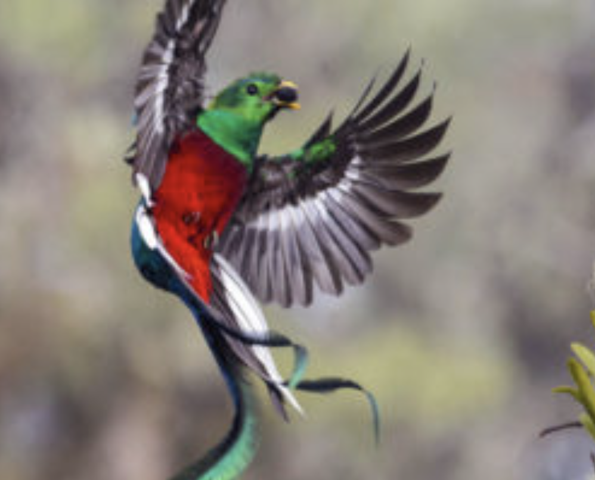
El quetzal (Pharomachrus Mocinno) es el ave nacional de Guatemala y tiene una gran importancia simbólica en la cultura maya. Su plumaje colorido y su presencia en las
selvas del país lo convierten en un emblema de belleza y libertad.
Breve Historia de Guatemala
Guatemala se caracteriza por una rica herencia de culturas indígenas, destacando los mayas, antes de la llegada de los españoles en 1524. La colonización
española sometió a la región durante casi tres siglos, formando parte de la Capitanía General de Guatemala. Tras lograr la independencia en 1821, Guatemala enfrentó
inestabilidad política y dictaduras a lo largo del siglo XIX y principios del XX.
En 1944, una revolución pacífica impulsó reformas democráticas y sociales, pero un golpe respaldado por Estados Unidos en 1954 interrumpió este progreso. El país se
sumió en un conflicto armado interno a partir de 1960, con graves violaciones de derechos humanos por ambos lados. Los Acuerdos de Paz de 1996 marcaron el fin del
conflicto, aunque Guatemala aún lucha con desafíos como la pobreza y la desigualdad. Su historia es una mezcla de lucha por la independencia y la búsqueda de una
sociedad más justa.
Hoy en día, Guatemala es un país diverso culturalmente, con una mezcla de tradiciones indígenas y españolas. Sin embargo, todavía enfrenta desafíos como la pobreza,
la desigualdad y la violencia. La historia del país es un testimonio de la lucha por la independencia y la búsqueda de una sociedad más justa y equitativa.
Extensión Territorial
Guatemala tiene una extensión territorial aproximada de: 108,890 km²
División Política de Guatemala
Guatemala está dividida en varias divisiones político-administrativas donde se incluye departamentos, municipios y aldeas así:
Departamentos: Guatemala se compone de 22 departamentos, que son divisiones territoriales similares a provincias. Cada departamento tiene su propia administración y
gobierno local. Algunos de los departamentos más conocidos son Guatemala, Quetzaltenango, Petén, Huehuetenango, Alta Verapaz y Escuintla.
Municipios: Cada departamento está subdividido en municipios, que son unidades administrativas más pequeñas. Guatemala tiene un total de 340 municipios. Cada
municipio tiene su propio alcalde y consejo municipal encargado de la administración local y la toma de decisiones.
Aldeas y Comunidades: Además de los municipios, existen divisiones más pequeñas llamadas aldeas (o caseríos) y comunidades. Estas son subdivisiones locales dentro de
los municipios y son la unidad más básica de organización comunitaria.
Los 22 departamentos se listan a continuación:
- Alta Verapaz
- Baja Verapaz
- Chimaltenango
- Chiquimula
- El Progreso
- Escuintla
- Guatemala
- Huehuetenango
- Izabal
- Jalapa
- Jutiapa
- Petén
- Quetzaltenango
- Quiché
- Retalhuleu
- Sacatepéquez
- San Marcos
- Santa Rosa
- Sololá
- Suchitepéquez
- Totonicapán
- Zacapa
Lugares Turísticos Importantes de Guatemala
- Antigua Guatemala: Esta ciudad colonial, ubicada en el departamento de Sacatepéquez, es famosa por su arquitectura barroca, calles empedradas y edificios
históricos. Declarada Patrimonio de la Humanidad por la UNESCO, Antigua Guatemala es conocida por sus iglesias, plazas, conventos y ruinas, que ofrecen una
vista fascinante de la historia colonial de Guatemala y de los terremotos que la afectaron. Además, está rodeada de montañas y volcanes, lo que brinda un
escenario espectacular.
- Tikal: Ubicado en el departamento de Petén, el Parque Nacional Tikal es uno de los sitios arqueológicos más importantes y emblemáticos de la civilización maya.
Sus impresionantes pirámides, templos y palacios emergen de la selva, ofreciendo una visión asombrosa de la grandeza de esta antigua cultura. Tikal es
Patrimonio de la Humanidad y es reconocido por su belleza natural y su importancia histórica.
- Lago de Atitlán: Este pintoresco lago se encuentra en el departamento de Sololá y está rodeado por tres majestuosos volcanes: San Pedro, Tolimán y Atitlán.
El lago y sus alrededores ofrecen vistas panorámicas espectaculares y una rica cultura indígena. Los pueblos que rodean el lago, como Panajachel y Santiago
Atitlán, brindan experiencias auténticas y oportunidades para explorar artesanías, tradiciones y mercados locales.
- Quetzaltenango (Xela): Ubicada en el departamento de Quetzaltenango, esta ciudad es un centro cultural y educativo en Guatemala. Es conocida por su arquitectura
neoclásica y su ambiente relajado. Los alrededores de Xela ofrecen oportunidades para explorar aguas termales, cataratas y volcanes, como el volcán Santa María.
Además, Xela es un punto de partida para excursiones a la Ruta del Suroeste, donde se encuentran paisajes impresionantes y pueblos indígenas.
Símbolos Patrios de El Salvador
Bandera de El Salvador
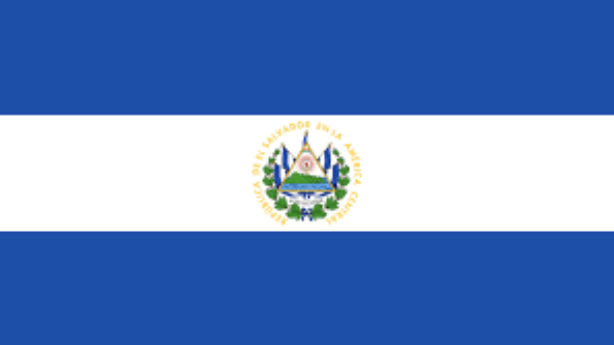
La bandera de El Salvador consta de tres franjas horizontales de igual tamaño. La franja superior e inferior son de color azul, mientras que la franja central es de
color blanco. En el centro de la franja blanca se encuentra el escudo de armas nacional.
Escudo de El Salvador
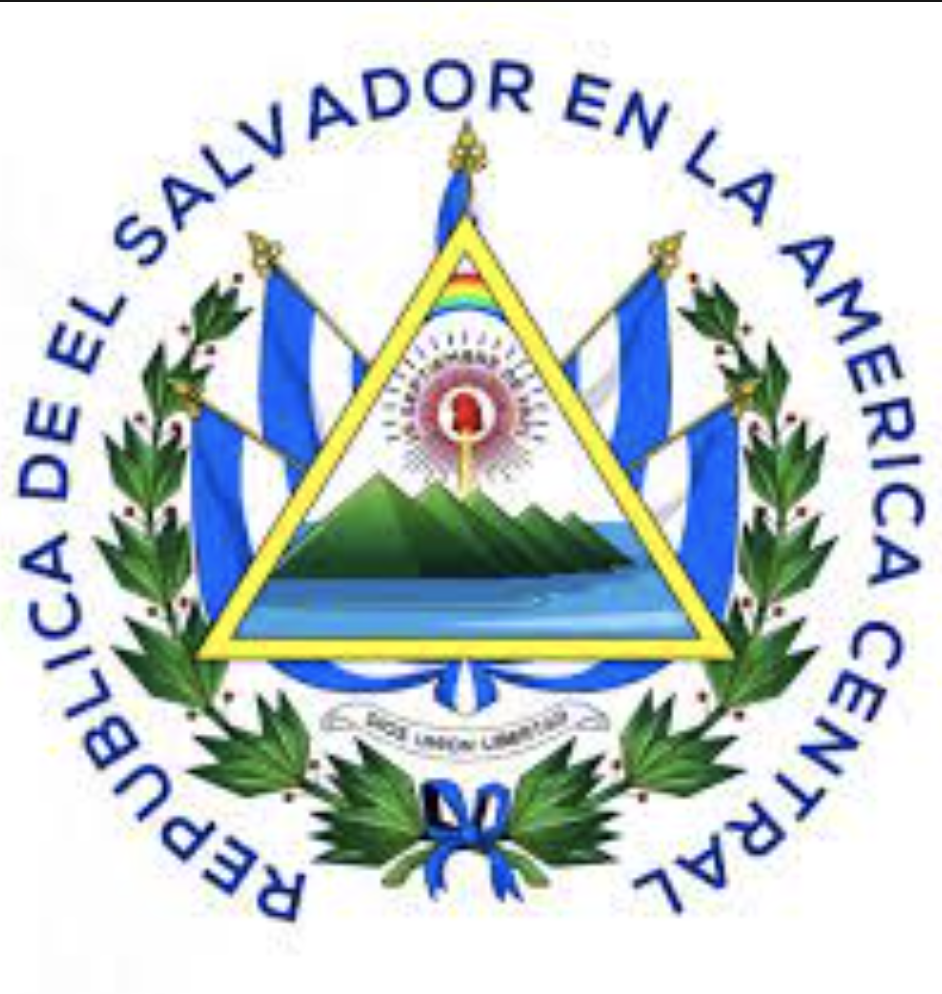
El escudo de El Salvador muestra un triángulo dorado con un volcán, simbolizando los tres principales volcanes del país. También incluye un valle verde y un
océano azul que representan la belleza natural de El Salvador. Encima del triángulo hay un gorro frigio rojo, un símbolo de libertad, y dos ramas de laurel que
representan la victoria.
Flor Nacional

La flor de izote (Yucca Gigantea) es la flor nacional de El Salvador. Es un símbolo de resiliencia y fuerza, ya que puede sobrevivir en condiciones difíciles y es
parte de la cultura culinaria salvadoreña.
Ave Nacional
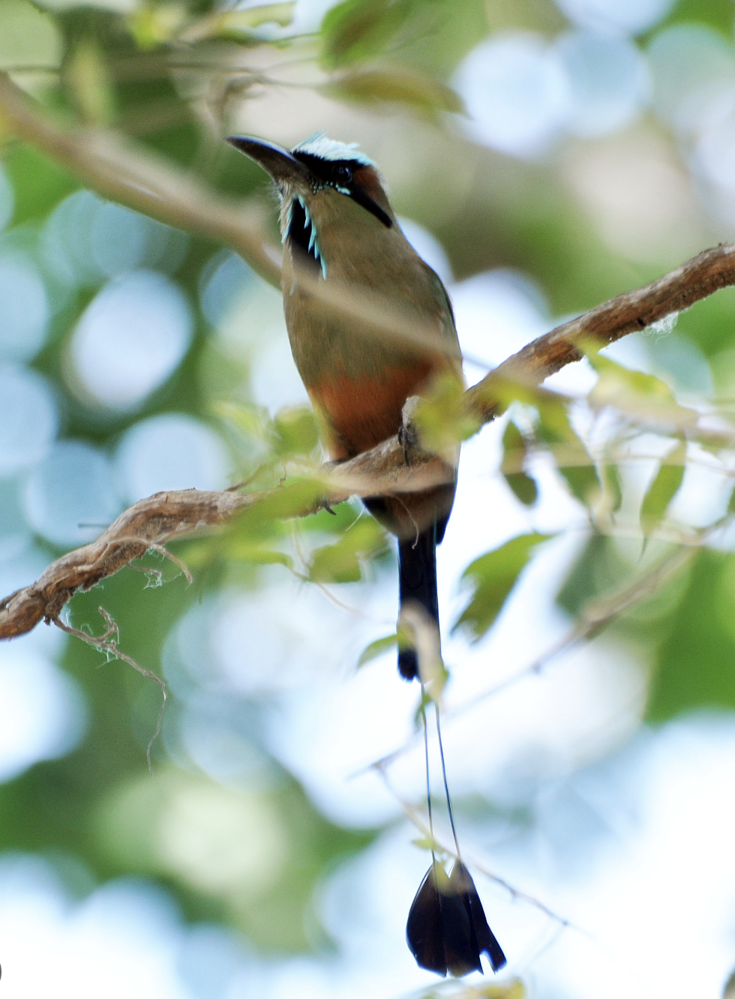
El torogoz (Eumomota Superciliosa) es el ave nacional de El Salvador. Es conocido por su plumaje vibrante y colorido. Su presencia en el país es un reflejo de la
diversidad de vida silvestre y la belleza natural.
Breve Historia de El Salvador
El Salvador, nación centroamericana, ha transitado por una historia marcada por la diversidad cultural y la colonización española en el siglo XVI. Tras independizarse
en 1821 y desligarse de la federación centroamericana en 1838, el país experimentó conflictos políticos y una economía centrada en el cultivo de café. La guerra civil
de la década de 1980 dejó heridas profundas y culminó en los Acuerdos de Paz de 1992, estableciendo un camino hacia la democracia. No obstante, El Salvador continúa
enfrentando desafíos socioeconómicos y problemas de violencia de pandillas, mientras que en años recientes, la nueva administración ha generado atención por su
enfoque tecnológico y decisiones que nadie se atrevía a tomar.
En el presente, El Salvador sigue lidiando con la pobreza, la criminalidad y la emigración, mientras busca soluciones para mejorar la calidad de vida de su población.
El país enfrenta un panorama complejo, con avances democráticos y retos persistentes en su camino hacia un desarrollo más equitativo y sostenible.
Extensión Territorial
El Salvador posee una extensión territorial aproximada de: 21,041 km²
División Política de El Salvador
El Salvador está dividido administrativamente en 14 departamentos, que son las subdivisiones principales del país. Cada departamento se compone de varios municipios,
que a su vez están formados por cantones y estos por caseríos. A continuación, se presentan los nombres de los 14 departamentos de El Salvador:
- Ahuachapán
- Cabañas
- Chalatenango
- Cuscatlán
- La Libertad
- La Paz
- La Unión
- Morazán
- San Miguel
- San Salvador
- San Vicente
- Santa Ana
- Sonsonate
- Usulután
Lugares Turísticos Importantes
- Ruta de las Flores: Esta pintoresca ruta recorre varios pueblos encantadores en las montañas de El Salvador, como Juayúa, Apaneca, Ataco y Nahuizalco. Ofrece
vistas panorámicas, mercados locales, arte callejero, cafetales y una gran variedad de actividades al aire libre.
- Playa El Tunco: Ubicada en la costa del océano Pacífico, Playa El Tunco es un destino popular para los amantes del surf. Sus olas y ambiente relajado atraen a
surfistas de todo el mundo. Además de las playas, la zona cuenta con una animada vida nocturna y opciones para practicar yoga y relajarse.
- Parque Nacional El Imposible: Este parque nacional es un paraíso para los amantes de la naturaleza y el ecoturismo. Ofrece una gran diversidad de flora y fauna
en un entorno montañoso y tropical. Los visitantes pueden realizar caminatas, observar aves y disfrutar de impresionantes paisajes.
- Joyas de Cerén: Conocido como la "Pompeya de América", Joyas de Cerén es un sitio arqueológico que ofrece una visión única de la vida cotidiana en una aldea maya
prehispánica. Fue enterrado por cenizas volcánicas y ha sido preservado en excelente estado, brindando una mirada fascinante al pasado.
Símbolos Patrios de Honduras
Bandera de Honduras
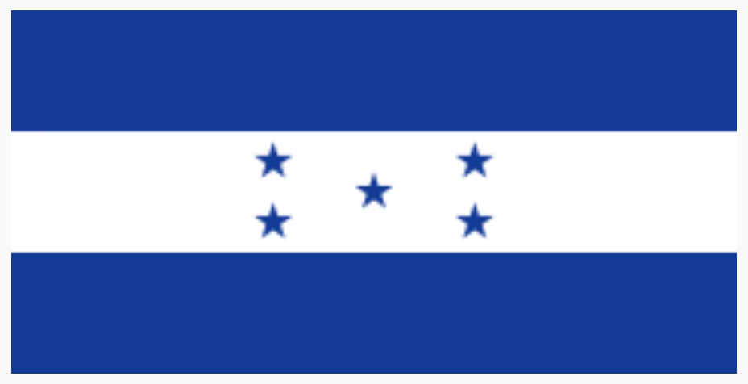
La bandera de Honduras consta de tres franjas horizontales: azul en la parte superior e inferior, y blanca en el centro. En el centro de la franja blanca se encuentra
el Escudo de Honduras.
Escudo de Honduras
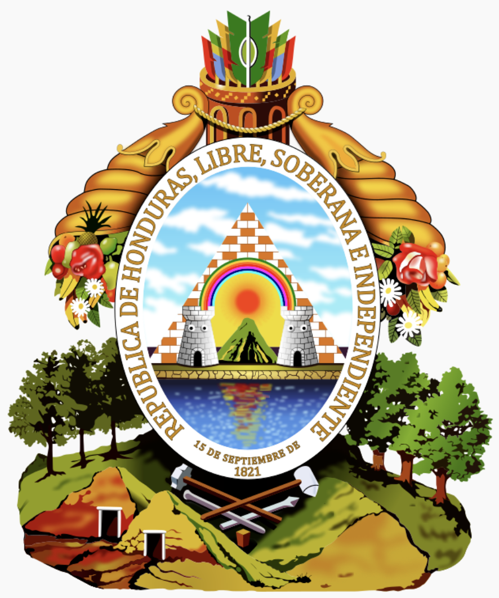
El escudo muestra un paisaje que incluye montañas, un océano y un cielo estrellado. Sobre este paisaje, se sitúa un sol radiante. El escudo está rodeado por dos ramas
de laurel y roble, y contiene cinco estrellas que representan a las naciones centroamericanas.
Flor Nacional
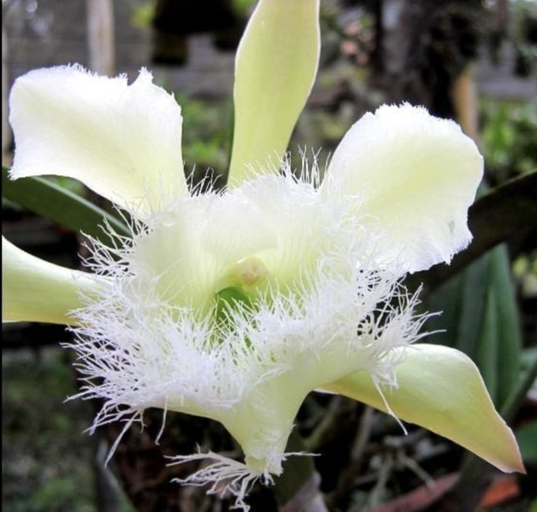
La flor nacional de Honduras es la Orquídea Brassavola Digbyana, también conocida como "Guaria Morada". Es una hermosa orquídea de color púrpura que florece en los
bosques tropicales de la región.
Ave Nacional
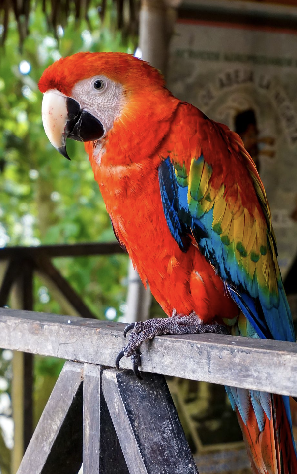
El Ave Nacional de Honduras es el Guacamayo Rojo (Ara Macao), un colorido y majestuoso pájaro que habita en las selvas tropicales del país.
Breve Historia de Honduras
Honduras, ubicada en América Central, tiene una rica historia que abarca desde las antiguas civilizaciones mayas hasta su independencia de España en 1821. A lo largo
del siglo XIX, el país enfrentó luchas internas y conflictos políticos, marcados por caudillos y la desintegración de la federación centroamericana. En el siglo XX,
Honduras atravesó periodos de inestabilidad política y golpes de Estado, mientras se veía influenciada por conflictos vecinos. Hoy, el país lucha por el desarrollo y
la democracia, enfrentando desafíos como la pobreza, la violencia y la migración.
Desde su ancestral herencia maya, Honduras ha atravesado diversos periodos históricos. Tras independizarse de España en 1821, el siglo XIX estuvo marcado por luchas
internas y el surgimiento de líderes locales. En el siglo XX, Honduras enfrentó inestabilidad política, golpes de Estado y efectos de conflictos regionales. En la
actualidad, el país busca superar desafíos socioeconómicos mientras preserva su diversidad cultural.
Honduras, cuya historia se extiende desde las raíces mayas hasta su independencia en 1821, ha vivido una trayectoria turbulenta. Siglos XIX y XX estuvieron marcados
por conflictos internos y políticos, con líderes carismáticos dominando la escena. Desafíos modernos como la pobreza, la violencia y la migración forman parte de su
presente, mientras lucha por un futuro de desarrollo y democracia.
Extensión Territorial
Honduras posee una extensión territorial aproximada de: 112,492 km²
División Política de Honduras
Honduras se divide políticamente en 18 departamentos. Cada departamento está subdividido en municipios, que a su vez se dividen en aldeas y caseríos. Los departamentos
son las divisiones administrativas más grandes del país y tienen sus propios gobiernos locales. Los 18 departamentos de Honduras son:
- Atlántida
- Choluteca
- Colón
- Comayagua
- Copán
- Cortés
- El Paraíso
- Francisco Morazán
- Gracias a Dios
- Intubucá
- Islas de la Bahía
- La Paz
- Lempira
- Ocotepeque
- Olancho
- Santa Bárbara
- Valle
- Yoro
Lugares Turísticos Importantes en Honduras
- Ruinas de Copán: Ubicadas en el departamento de Copán, estas ruinas mayas son uno de los sitios arqueológicos más impresionantes de América Central. Copán es
famosa por sus elaboradas estelas, esculturas y complejas estructuras arquitectónicas. Es un lugar que ofrece una visión fascinante de la antigua civilización
maya.
- Islas de la Bahía: Este archipiélago en el Caribe hondureño consta de tres islas principales: Roatán, Utila y Guanaja. Estas islas son conocidas por sus playas
de arena blanca, aguas cristalinas y arrecifes de coral, lo que las convierte en un destino popular para el buceo, el esnórquel y otras actividades acuáticas.
- Parque Nacional Pico Bonito: Situado cerca de La Ceiba, este parque nacional es una joya natural que ofrece una exuberante selva tropical, cascadas, ríos y una
variada vida silvestre. Los visitantes pueden disfrutar de senderismo, observación de aves y otras actividades al aire libre en este entorno virgen.
- Tela y las playas de la Costa Norte: Tela es una ciudad costera en la Costa Norte de Honduras, conocida por sus playas de arena dorada y aguas tranquilas. La
zona es perfecta para relajarse, disfrutar del sol y el mar, así como explorar las comunidades garífunas y su rica herencia cultural.
Símbolos Patrios de Nicaragua
Bandera de Nicaragua
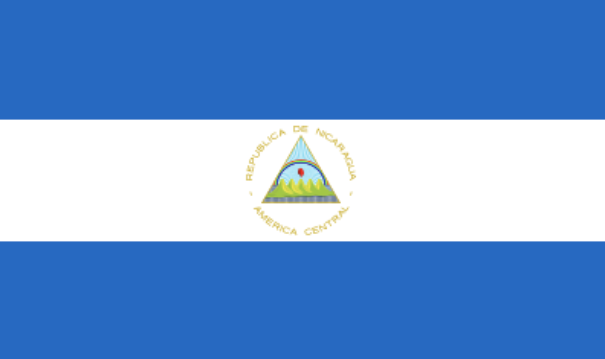
La bandera de Nicaragua consta de tres franjas horizontales: dos franjas azules en los extremos y una franja blanca en el centro. En la franja blanca se encuentra el
escudo de armas de Nicaragua. El azul simboliza los océanos Atlántico y Pacífico que bordean el país, y el blanco representa la pureza y la paz.
Escudo de Nicaragua
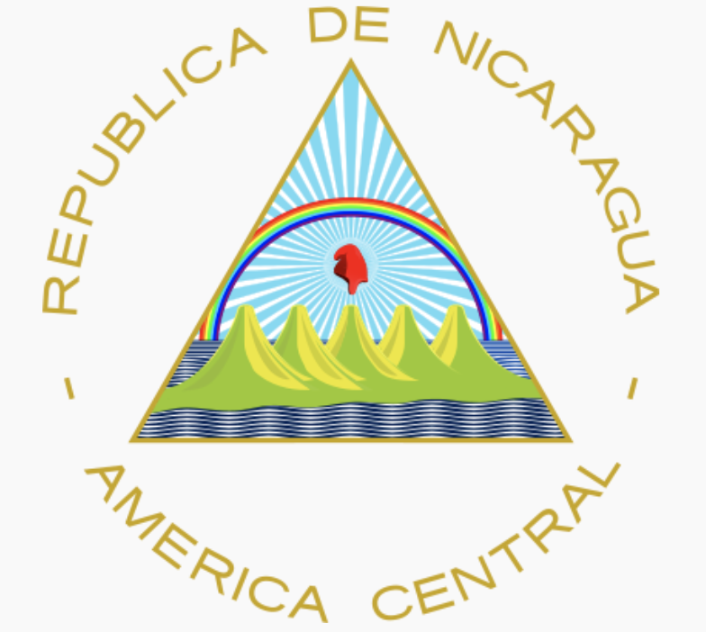
Contiene varios elementos representativos, incluyendo un volcán, cinco montañas, un lago, y un océano. También incluye un arco de laurel y una corona cívica. El escudo
destaca la belleza natural del país y su posición geográfica entre el Atlántico y el Pacífico.
Flor Nacional
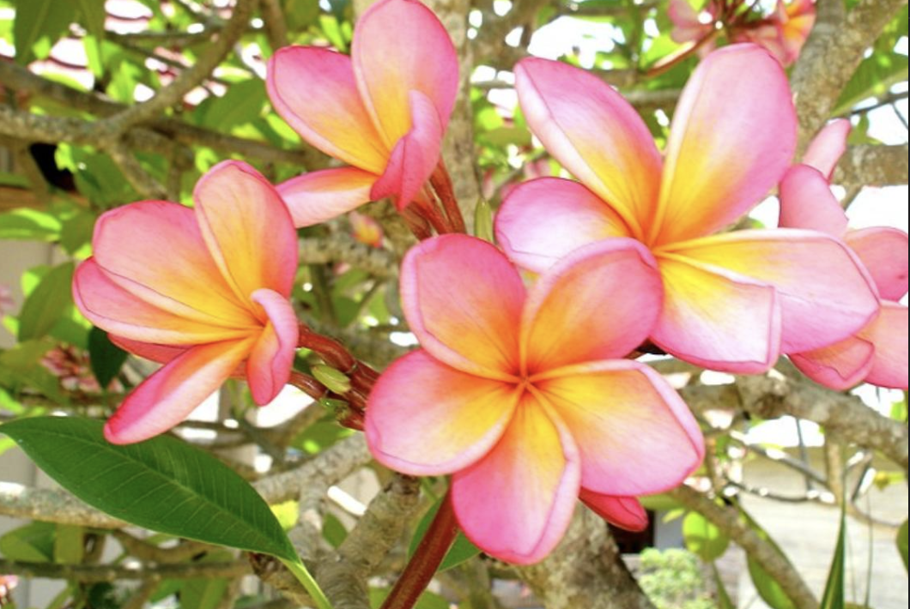
Es la Flor de Sacuanjoche la flor nacional de Nicaragua. El sacuanjoche es una planta aromática y colorida que florece durante todo el año en el país. Su dulce
fragancia y vibrante belleza la convierten en un símbolo de la naturaleza nicaragüense.
Árbol Nacional
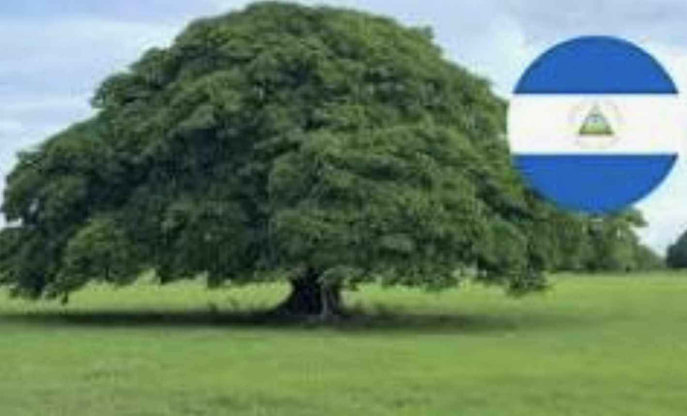
El árbol nacional de Nicaragua es el madroño (Calycophyllum Candidissimum). Es un árbol de hoja perenne que produce flores blancas y frutos rojos, y es valorado por
su madera y su importancia en la cultura y la identidad nicaragüense.
Breve Historia de Nicaragua
Nicaragua, en América Central, tiene una historia caracterizada por la influencia colonial española y la lucha por la independencia. En el siglo XIX, su ubicación
estratégica la convirtió en un punto clave para el comercio transoceánico, aunque también sufrió intervenciones extranjeras, particularmente de Estados Unidos.
Durante la década de 1930, Augusto César Sandino lideró una resistencia nacionalista contra la ocupación estadounidense, allanando el camino para el régimen de
Anastasio Somoza García, que estableció una dinastía dictatorial duradera.
La revolución sandinista de 1979, liderada por el Frente Sandinista de Liberación Nacional (FSLN), derrocó a la dinastía Somoza y estableció una república socialista.
La década de 1980 estuvo marcada por un conflicto armado entre el gobierno sandinista y los "Contras", grupos contrarrevolucionarios apoyados por Estados Unidos. Aunque
se logró una transición democrática en 1990, Daniel Ortega, líder del FSLN, regresó al poder en 2007, generando controversias por su gobierno, su manejo de la
democracia y los derechos humanos. La historia reciente de Nicaragua sigue siendo una interacción compleja de política, identidad, desafíos económicos y ambientales
en la región.
Extensión Territorial
Nicaragua ocupa una extensión territorial aproximada de: 130,373 km²
División Política de Nicaragua
Nicaragua está dividida en 15 departamentos y 2 regiones autónomas, cada una con su propia administración local. Aquí se enlista:
- Departamentos:
- Boaco
- Carazo
- Chinandega
- Chontales
- Estelí
- Granada
- Jinotega
- León
- Madriz
- Managua
- Masaya
- Matagalpa
- Nueva Segovia
- Río San Juan
- Rivas
- Regiones Autónomas:
- Región Autónoma de la Costa Caribe Norte (RACCN)
- Región Autónoma de la Costa Caribe Sur (RACCS)
Lugares Turísticos Importantes en Nicaragua
- Granada: Esta ciudad colonial es uno de los destinos turísticos más populares de Nicaragua. Con sus calles empedradas, coloridas fachadas y arquitectura colonial
bien conservada, Granada es un verdadero encanto. Los visitantes pueden explorar la Catedral de Granada, dar un paseo en carruaje por la ciudad, disfrutar de
vistas panorámicas desde la Torre de la Merced y relajarse en las cercanas aguas termales de las lagunas de Apoyo.
- Isla de Ometepe: Ubicada en el Lago de Nicaragua, la Isla de Ometepe es un destino único y pintoresco. La isla es en realidad un doble volcán, unida por un istmo.
Los visitantes pueden explorar los volcanes Concepción y Maderas, hacer senderismo, observar la fauna y flora exuberante, y disfrutar de playas en el lago.
Ometepe es también un lugar para aprender sobre la cultura precolombina y las tradiciones locales.
- San Juan del Sur: Esta ciudad costera en el Pacífico es conocida por sus playas de arena dorada, actividades acuáticas y ambiente relajado. Es un destino popular
para surfistas y amantes del sol. Además de las playas, los visitantes pueden explorar la Bahía de San Juan del Sur, disfrutar de la vida nocturna, y tomar un
crucero para avistar delfines y ballenas.
- León: Con su rica historia y cultura, León es otro lugar turístico importante. La ciudad alberga numerosos edificios coloniales, incluyendo su catedral, que es
considerada una de las más grandes de Centroamérica. Los viajeros pueden subir a los tejados de la catedral para disfrutar de vistas panorámicas. León también
es un punto de partida para hacer senderismo en el volcán Telica y explorar la Reserva Natural Volcán Telica.
Símbolos Patrios de Costa Rica
Bandera de Costa Rica
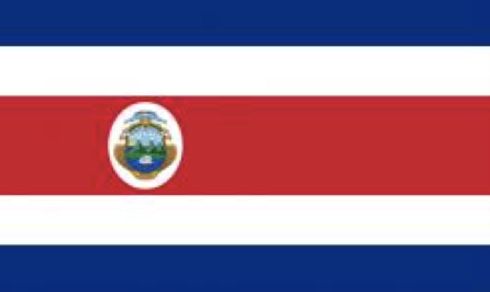
La bandera de Costa Rica consta de cinco franjas horizontales: azul en la parte superior e inferior, seguidas de una franja blanca más ancha y luego dos franjas rojas.
El escudo de armas de Costa Rica se encuentra en la franja roja del lado izquierdo.
Escudo de Costa Rica
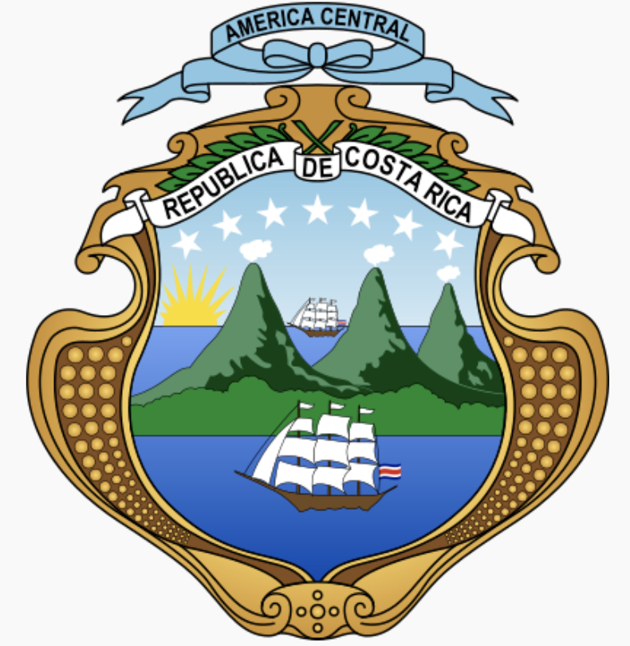
Es un emblema heráldico que representa elementos clave de la historia y la cultura del país. Incluye varios símbolos, como volcanes, océano, un barco mercante,
montañas y un valle fértil. Además, dos océanos (el Atlántico y el Pacífico) flanquean el escudo. El sol naciente detrás de las montañas simboliza un nuevo comienzo.
Flor Nacional
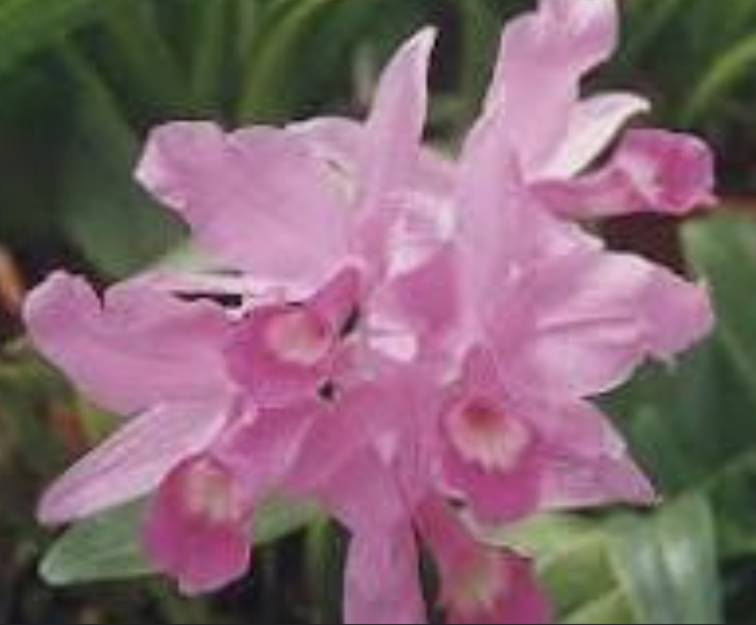
La Guaria Morada (Guarianthe Skinneri) es la flor nacional de Costa Rica. Es una especie de orquídea que se encuentra en la región y se aprecia por su belleza y elegancia.
Ave Nacional
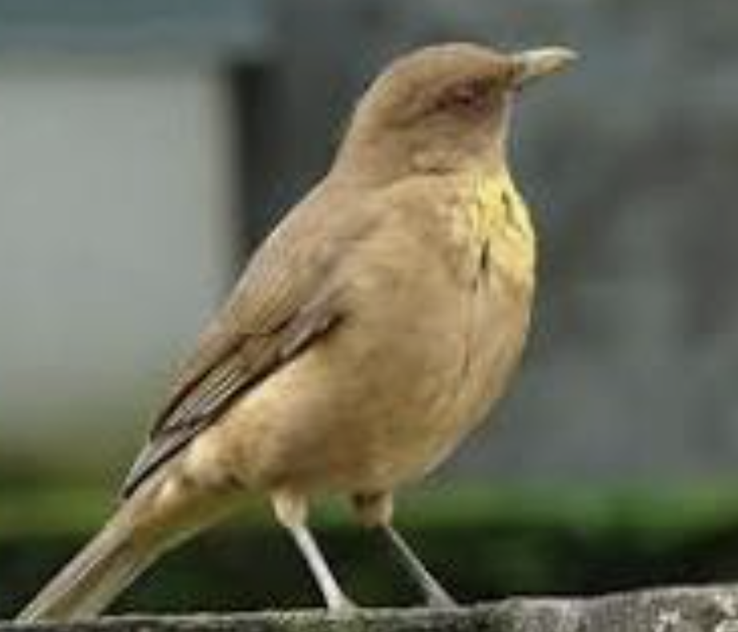
El yigüirro (Turdus Grayi) es el ave nacional de Costa Rica y es apreciada por su canto melodioso, especialmente durante la temporada de lluvias. Su canto es
considerado un signo de buena suerte y bienvenida en el país.
Breve Historia de Costa Rica
Costa Rica, enclavada en América Central, tiene una historia marcada por la independencia y la estabilidad. Descubierta por Colón en 1502, su colonización fue tardía
debido a la escasez de recursos minerales. Tras lograr la independencia de España en 1821, Costa Rica se desvinculó de la efímera federación centroamericana en 1838.
A lo largo del siglo XIX, su economía creció gracias al café y se centró en la educación en lugar de mantener un ejército. Esto fomentó un desarrollo pacífico y
democrático, ganando reputación como oasis de estabilidad en América Central. Hoy en día, Costa Rica destaca por su exuberante biodiversidad y turismo sostenible.
Desde su descubrimiento por Colón en 1502, Costa Rica ha trazado una trayectoria única en América Central. Su independencia en 1821 de España y su posterior
separación de la federación centroamericana en 1838 marcaron el inicio de su identidad como nación. A lo largo del siglo XIX, el café impulsó su economía, mientras
que su énfasis en la educación y la abolición del ejército en 1949 fomentaron una sociedad pacífica y democrática. Costa Rica se ha convertido en un refugio de
estabilidad en una región a menudo afectada por conflictos y ha ganado reconocimiento por su enfoque en la sostenibilidad y la preservación del entorno natural,
lo que la convierte en un destino turístico excepcional.
Costa Rica, ubicada en el corazón de América Central, tiene una historia que destaca por su independencia temprana y su enfoque en la estabilidad. Descubierta por
Cristóbal Colón en 1502, la región no fue colonizada de inmediato debido a la falta de riquezas minerales. Después de lograr la independencia de España en 1821,
Costa Rica se separó de la federación centroamericana en 1838, marcando el camino hacia su propio desarrollo. Durante el siglo XIX, la industria cafetalera impulsó
su economía, mientras que decisiones como la abolición del ejército en 1949 contribuyeron a la creación de una sociedad pacífica y democrática. Hoy en día,
Costa Rica es conocida por su biodiversidad excepcional y su enfoque en el turismo sostenible.
Extensión Territorial
Costa Rica ocupa una extensión territorial de aproximadamente 51,100 km²
División Política de Costa Rica
Costa Rica está dividida en diferentes unidades políticas que incluyen provincias, cantones y distritos. Costa Rica se divide en siete provincias, cada una con
su propia administración y gobierno local. Las provincias son:
- Alajuela
- Cartago
- Guanacaste
- Heredia
- Limón
- Puntarenas
- San José
Lugares Turísticos Importantes
- Parque Nacional Manuel Antonio: Ubicado en la costa del Pacífico, este parque es famoso por su impresionante biodiversidad y playas de arena blanca. Ofrece una
combinación única de selva tropical, vida silvestre, senderos panorámicos y hermosas playas. Los visitantes pueden observar monos, perezosos, aves exóticas y
mucho más mientras exploran este parque.
- Volcán Arenal y Aguas Termales: El Volcán Arenal es uno de los volcanes más activos de Costa Rica y es un destino popular para los amantes de la naturaleza y
la aventura. Los visitantes pueden caminar por senderos que serpentean alrededor del volcán y disfrutar de aguas termales naturales que provienen del calor
geotérmico del volcán.
- Parque Nacional Tortuguero: Conocido como la "Amazonia de Costa Rica", este parque nacional es un santuario para la vida silvestre y ofrece oportunidades únicas
para observar tortugas marinas anidando en las playas. Los canales y lagunas del parque también son ideales para paseos en bote y avistamiento de aves.
- Monteverde y Reserva de Monteverde: Esta área es famosa por su bosque nuboso y su rica biodiversidad. Los visitantes pueden explorar senderos suspendidos entre
las copas de los árboles, observar colibríes en jardines especializados y disfrutar de la majestuosidad del bosque nuboso.
Símbolos Patrios de Panamá
Bandera de Panamá

La bandera de Panamá consta de cuatro cuarteles: el superior izquierdo es de color blanco con una estrella azul, el superior derecho es de color rojo, el inferior
izquierdo es de color azul y el inferior derecho es de color blanco con una estrella roja. Los colores y las estrellas tienen significados históricos y representan
la unión de la población, la lucha por la independencia y la conexión entre los océanos Atlántico y Pacífico.
Escudo de Panamá
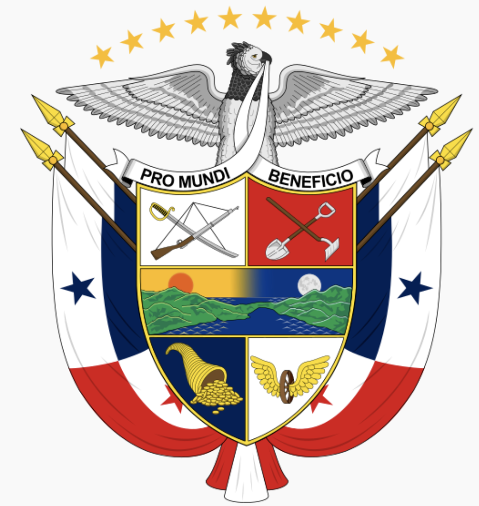
Presenta un campo blanco con dos animales, un águila harpía y un león, sosteniendo un escudo. El escudo muestra un istmo en azul y blanco, representando la geografía
del país. También incluye dos banderas cruzadas y unas franjas onduladas que simbolizan los océanos Atlántico y Pacífico.
Flor Nacional
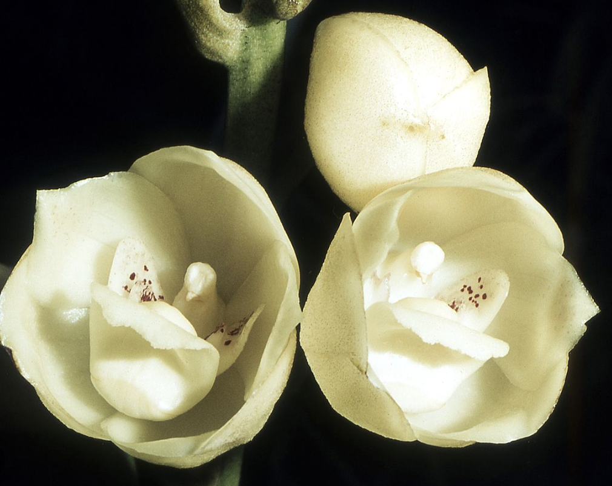
La flor nacional de Panamá es la flor del Espíritu Santo (Peristeria Elata), una orquídea que se encuentra en los bosques tropicales del país. Es apreciada por su
belleza y singularidad.
Breve Historia de Panamá
Panamá, situada entre los océanos Atlántico y Pacífico, tiene una rica historia. Desde culturas indígenas precolombinas hasta la llegada de los exploradores europeos,
su historia es diversa. Vasco Núñez de Balboa, en 1513, descubrió el océano Pacífico, marcando un hito en la exploración. Tras ser parte del Imperio Español y la
Gran Colombia, Panamá obtuvo su independencia en 1903, con apoyo de Estados Unidos, y se convirtió en una nación independiente. La construcción del Canal de Panamá,
culminada en 1914, transformó el comercio global al conectar los océanos. En 1999, el control total del canal pasó a manos panameñas, simbolizando su autonomía.
Actualmente, Panamá es conocida por su economía diversa, paisajes impresionantes y una mezcla multicultural de tradiciones que definen su identidad.
Extensión Territorial
Panamá ocupa una extensión territorial aproximada de: 75,417 km²
División Política de Panamá
Panamá está dividida en un total de 10 provincias. Estas provincias son:
Lugares Turísticos Importantes en Panamá
- El Canal de Panamá: Una de las obras de ingeniería más emblemáticas del mundo, el Canal de Panamá es un lugar imperdible. Los visitantes pueden observar cómo
los barcos atraviesan las esclusas y aprender sobre la historia y el funcionamiento del canal en el Centro de Visitantes de Miraflores.
- Casco Viejo, Ciudad de Panamá: Este es el casco histórico de la Ciudad de Panamá y es conocido por su arquitectura colonial, calles empedradas y edificios
históricos. Ofrece una mezcla única de influencias arquitectónicas españolas, francesas y caribeñas, junto con una vibrante vida cultural, restaurantes y tiendas.
- Archipiélago de Bocas del Toro: Un paraíso tropical en el Caribe, este archipiélago es famoso por sus playas de arena blanca, aguas cristalinas y diversidad
marina. Es un destino popular para actividades acuáticas como el buceo, el snorkel y el surf, además de ser un lugar relajante para desconectar.